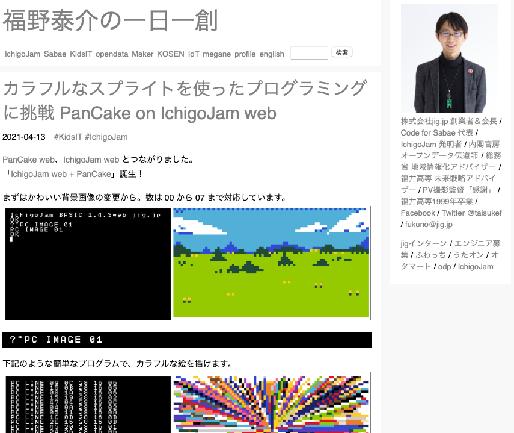
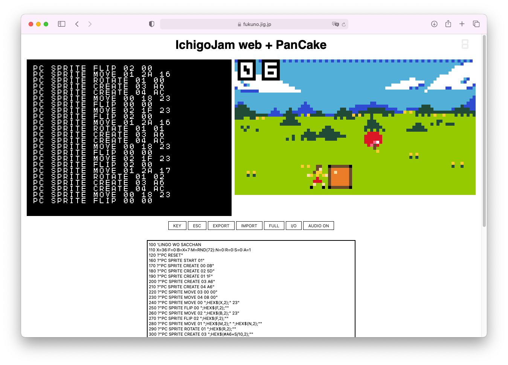

ブラウザでBASICゲームを作ろう！ IchigoJam-web × PanCake-web が出た！

福野くん が PanCake の web版 を制作中、ついにBASICと合体したとあって、さっそく名作「りんごをさっちゃん」をプレイ！
100 'LINGO WO SACCHAN S
110 X=36:F=0:B=X+7:M=RND(72):N=0:R=0:S=0:A=1
120 ?"PC RESET"
160 ?"PC SPRITE START 01"
170 ?"PC SPRITE CREATE 00 0B"
180 ?"PC SPRITE CREATE 02 5D"
190 ?"PC SPRITE CREATE 01 1F"
200 ?"PC SPRITE CREATE 03 A6"
210 ?"PC SPRITE CREATE 04 A6"
220 ?"PC SPRITE MOVE 03 00 00"
230 ?"PC SPRITE MOVE 04 08 00"
240 ?"PC SPRITE MOVE 00 ";HEX$(X,2);" 23"
250 ?"PC SPRITE FLIP 00 ";HEX$(F,2);""
260 ?"PC SPRITE MOVE 02 ";HEX$(B,2);" 23"
270 ?"PC SPRITE FLIP 02 ";HEX$(F,2);""
280 ?"PC SPRITE MOVE 01 ";HEX$(M,2);" ";HEX$(N,2);""
290 ?"PC SPRITE ROTATE 01 ";HEX$(R,2);""
300 ?"PC SPRITE CREATE 03 ";HEX$(#A6+S/10,2);""
310 ?"PC SPRITE CREATE 04 ";HEX$(#A6+S%10,2);""
320 K=INKEY()
330 IF K=28 X=X-4:F=1:B=X-7
340 IF K=29 X=X+4:F=0:B=X+7
350 R=(R+1)%4:N=N+RND(A+1)
360 IF (35<N)*(B-4<M)*(M<B+4) S=S+1
370 IF (35<N)*(X-4<M)*(M<X+4) GOTO 400
380 IF 35<N M=RND(72):N=0:A=(S+10)/10
390 GOTO 240
400 ?"PC SOUND1 00 03 00":WAIT90
401 ?"PC SOUND1 00 03 ff"
410 ?"Game Over"
原盤のソースにはバイナリコマンドがあり、web版では動かない部分があったため記述を少し変更、済みのソースはこちら。サウンド機能が欲しかったのでひとまず SOUND1 を機能追加してプルリク、マージさんきゅっ。

IchigoCake BASIC のように、BASICに専用コマンド(PC.IMAGE など)ができたらますます使いやすくなりそう！